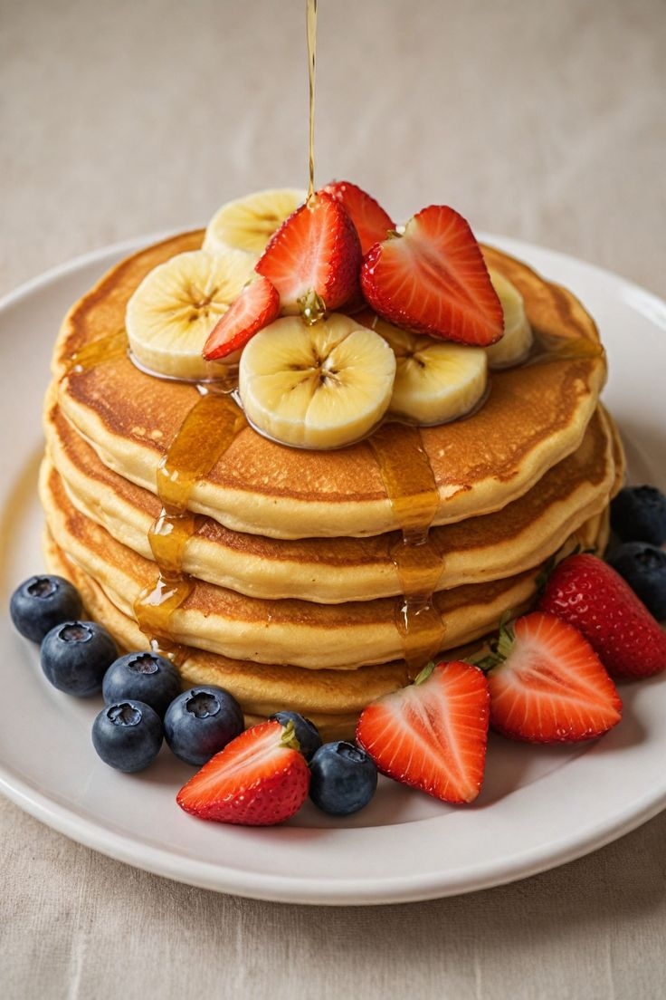

Panqueques Clásicos

Descripción
Los panqueques son una opción perfecta para el desayuno o la merienda. Su textura suave y
esponjosa permite acompañarlos con frutas, miel, mantequilla o jarabe de arce.
Su preparación requiere pocos ingredientes y es una excelente receta para quienes están comenzando
a cocinar.
Ingredientes
- 1 taza de harina
- 1 huevo
- 1 taza de leche
- 2 cucharadas de azúcar
- 1 cucharadita de polvo para hornear
- 1 cucharada de mantequilla derretida
- Una pizca de sal
Pasos
- Mezclar los ingredientes secos.
- Agregar la leche, el huevo y la mantequilla.
- Batir hasta obtener una mezcla homogénea.
- Calentar una sartén antiadherente.
- Verter una porción de la mezcla.
- Cocinar hasta que aparezcan burbujas.
- Voltear el panqueque.
- Cocinar un minuto más y servir.
Página Principal